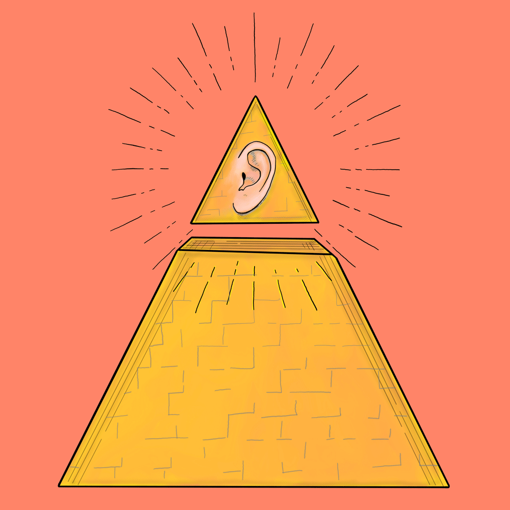

Rare Ear
Rare Ear is the mixing and mastering studio of
Max Lorenzen in
Lockhart, TX.
Use this
contact form to get in touch regarding mastering, mixing, and recording projects.
Listen to music Max has mastered, recorded, produced or mixed.
Max also provides speaker tuning services and Pro Tools training.
Contact for more information.
Work
See some of Max's credits on
Discogs.com and
AllMusic.com.
Listen to a selection of Max's work below.
Mastering:
Mixing:
Production: